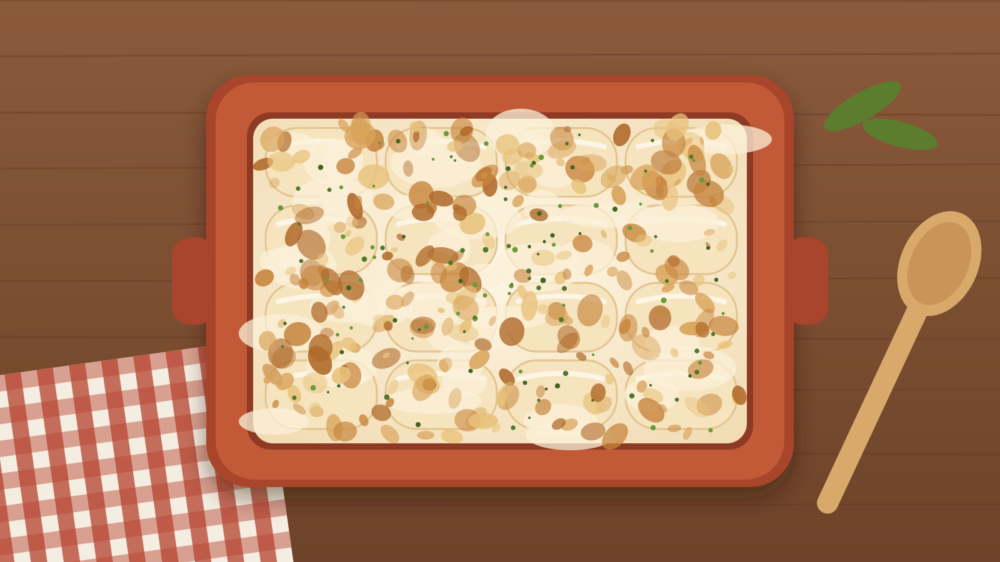
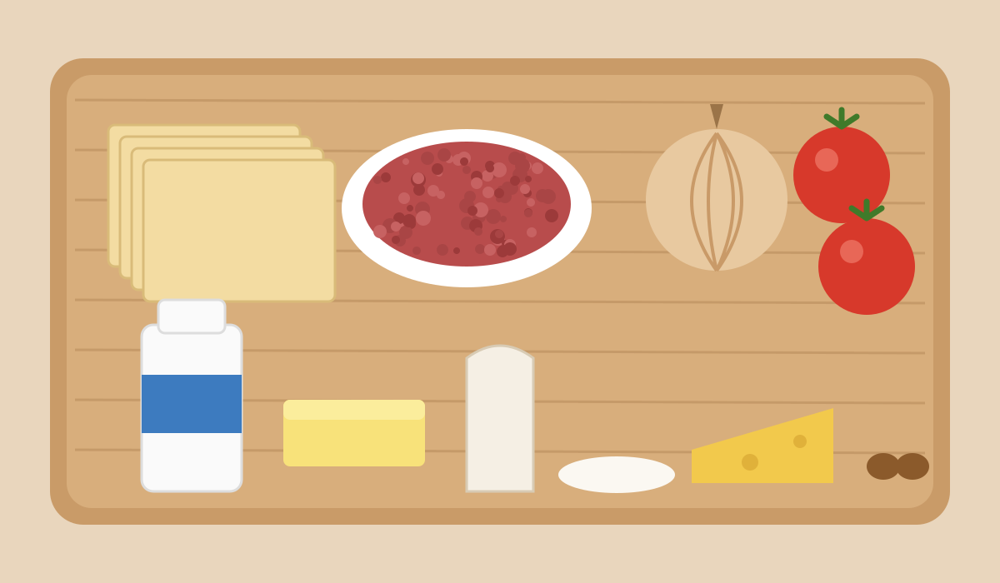

- Raciones 4 personas
- Tiempo 2 horas
- Dificultad Media
Ingredientes

Para el relleno
- 16 placas de canelones
- 250 g de carne de cerdo
- 250 g de carne de ternera
- 1 pechuga de pollo
- 1 cebolla grande
- 2 tomates maduros
- 1 vaso de vino blanco o vino rancio
- Aceite de oliva y sal
Para la bechamel
- 1 litro de leche
- 80 g de mantequilla
- 80 g de harina
- Nuez moscada, sal y pimienta
- 100 g de queso rallado para gratinar
Preparación
- Corta las carnes en trozos y dóralas en una cazuela con un buen chorro de aceite de oliva.
- Añade la cebolla picada y deja que se poche a fuego lento hasta que esté dorada.
- Incorpora los tomates rallados y cocina hasta que el sofrito pierda el agua.
- Riega con el vino, deja que se evapore el alcohol y cocina todo tapado unos 45 minutos.
- Pica la carne guisada (con picadora o cuchillo) y mézclala con dos cucharadas de bechamel para que el relleno quede jugoso.
- Cuece las placas de canelones en agua con sal según indique el paquete y extiéndelas sobre un paño limpio.
- Prepara la bechamel: derrite la mantequilla, tuesta la harina un par de minutos y añade la leche caliente poco a poco sin dejar de remover. Sazona con sal, pimienta y nuez moscada.
- Pon una cucharada de relleno en cada placa y enróllala. Colócalos en una bandeja de horno untada con un poco de bechamel.
- Cubre con el resto de la bechamel, espolvorea el queso rallado y gratina en el horno a 200 °C durante 10–15 minutos, hasta que estén dorados.
Truco de casa: el relleno está todavía más rico si lo preparas el día anterior.
¿Sabes de dónde viene esta receta?
Conoce la historia de este plato